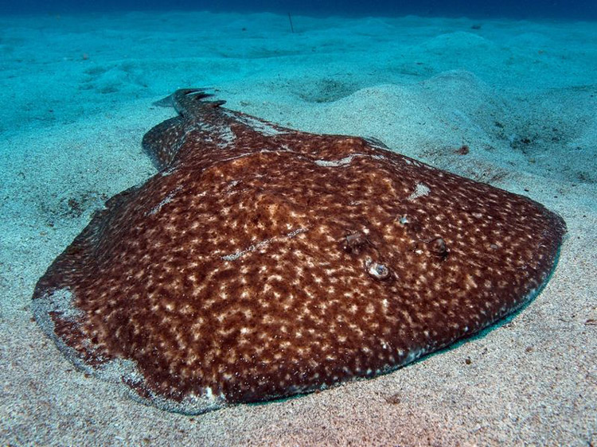

Скат

Скаты — это ковры-самолеты подводного мира, ведь так называют хрящевых рыб с плоской формой тела. Представители этой систематической группы очень разнообразны, поэтому объединены в несколько отрядов, составляющих единый надотряд Скаты. В мире насчитывается порядка 340 видов этих рыб. Систематически все они близки к акулам. В связи с сильным уплощением тела жаберные отверстия у этих рыб целиком переместились на нижнюю сторону тела. Там же находится и широкий рот. По обеим сторонам от рта можно увидеть небольшие отверстия. Несведущие люди могут принять их за крошечные глазки, на самом деле, это брызгальца. Через них скат нагнетает воду в жаберные щели, чтобы дышать. Настоящие глаза находятся у скатов на верхней стороне тела. У разных видов их размер колеблется от крупного до мелкого, а у слепого электрического ската они и вовсе скрыты под кожей. В связи с такими анатомическими особенностями претерпели изменения и органы движения. Анальный плавник у скатов редуцировался, а грудные срослись с телом, превратившись в плоские «крылья». У некоторых скатов крылья-плавники сравнительно маленькие и не принимают участия в движении, главным толкателем у них, как и у других рыб, выступает мускулистый хвост. У других видов, наоборот, грудные плавники огромные, а хвост тонкий и слабый. Когда такая рыба плывет, она одновременно подымает и опускает плавники и будто бы летит в толще воды. Кстати, такой способ движения позволяет развивать скатам большую скорость и даже выпрыгивать из воды на несколько метров.